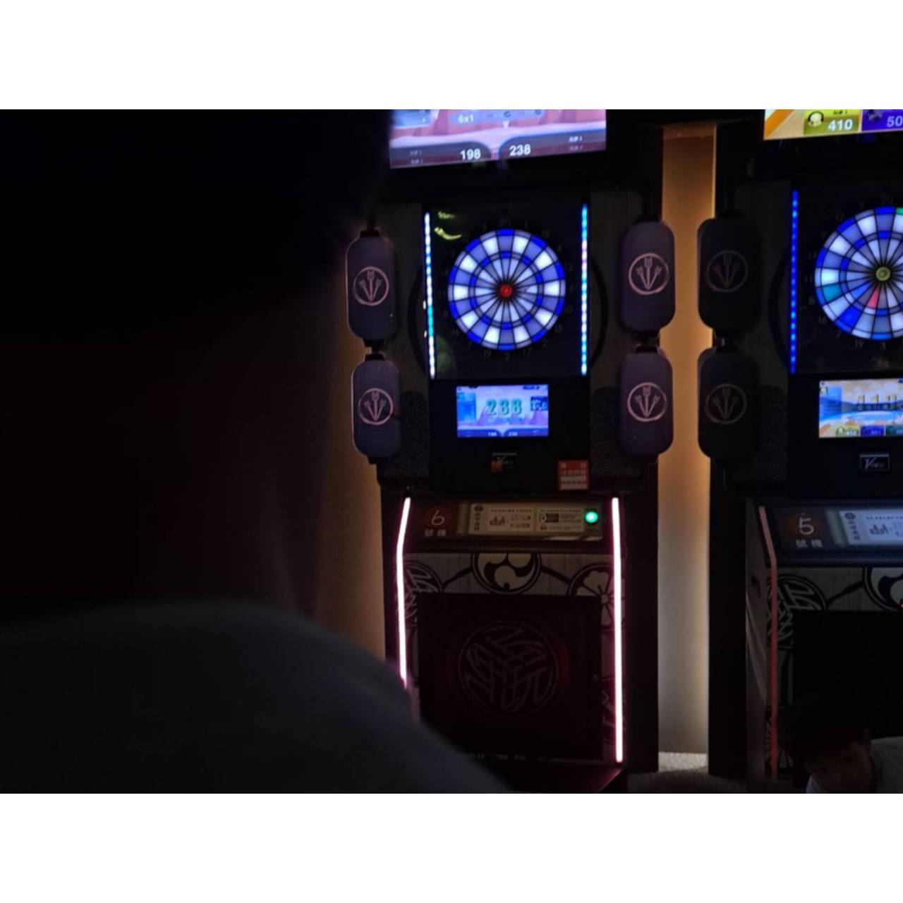

Scroll Reveals
當元素進入視窗，動畫自動觸發。
使用 IntersectionObserver 實作，零依賴。
Fade Up
元素從下方淡入
Scale In
元素縮放出現
Slide Left
元素從右滑入
WEBSITES THAT MOVE
Scroll to explore — 向下探索
當元素進入視窗，動畫自動觸發。
使用 IntersectionObserver 實作，零依賴。
多層元素以不同速率移動，創造深度感。
無 JavaScript，僅用 CSS @keyframes 驅動。
移動滑鼠與粒子互動 — 靠近時粒子會逃跑。
hover 放大・點擊全螢幕・鍵盤 ← → 切換
